ТОПЛИВНАЯ СИСТЕМА ДВИГАТЕЛЯ > МЕРЫ ПРЕДОСТОРОЖНОСТИ |
| 1.МЕРЫ ПРЕДОСТОРОЖНОСТИ |
Перед началом работ с топливной системой, включая проверки и ремонт, отсоедините провод от отрицательного (-) вывода аккумуляторной батареи.
Не курите и остерегайтесь огня при выполнении работ с топливной системой.
Не допускайте попадания топлива на детали из резины и кожи.
| 2.СБРОСЬТЕ ДАВЛЕНИЕ В ТОПЛИВНОЙ СИСТЕМЕ |
Извлеките размыкающее реле из блока реле моторного отсека.
Запустите двигатель. После остановки двигателя выключите зажигание.
Убедитесь, что двигатель не запускается.
Снимите пробку наливной горловины топливного бака и выпустите воздух из топливного бака.
Отсоедините кабель от отрицательного (-) вывода аккумуляторной батареи.
Установите на место размыкающее реле.
| 3.ТОПЛИВНАЯ СИСТЕМА |
При отсоединении топливной магистрали высокого давления может быть разлито большое количество бензина. Соблюдайте следующий порядок выполнения работ.
Отсоедините трубку топливного насоса.
Слейте топливо, оставшееся в топливопроводе топливного насоса.
Чтобы избежать повреждения или загрязнения отсоединенной трубки топливного насоса, накройте ее полиэтиленовым пакетом.
Подставьте емкость под патрубок.
| 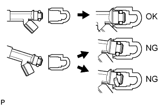 |
Соблюдайте данные меры предосторожности при снятии и установке форсунок.
Ни в коем случае не используйте кольцевые уплотнения повторно.
При установке нового кольцевого уплотнения на форсунку соблюдайте осторожность, чтобы не повредить его.
Перед установкой нанесите на новые кольцевые уплотнения шпиндельное масло или бензин. Избегайте применения моторного масла, трансмиссионной жидкости и тормозной жидкости.
| 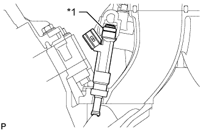 |
Установите форсунку на топливную рампу и нижний впускной коллектор, как показано на рисунке.
| *1 | Кольцевое уплотнение |
 |
При отсоединении разъема топливопровода (быстрый разъем А) принимайте следующие меры предосторожности.
Разъем топливного шланга с крышкой:
Расцепите защелку замка, подняв крышку, как показано на рисунке.
| *1 | Крышка разъема топливного шланга |
Перед отсоединением проверьте, нет ли грязи и посторонних частиц на трубопроводе и вокруг разъема. При необходимости очистите.
 |
Если разъем и трубопровод не разъединяются, сожмите разъем, а затем подвигайте трубопровод вперед и назад для его отсоединения.
| *1 | Фиксатор |
 | Зажмите |
 | Потяните |
 |
| *1 | Фиксатор |
| *2 | Нейлоновая трубка |
| *3 | Патрубок |
| *4 | Кольцевое уплотнение |
| *5 | Соединитель топливопровода |
Проверьте, нет ли посторонних частиц и загрязнений на поверхности уплотнения отсоединенного трубопровода. При необходимости очистите.
Закройте отсоединенные топливопровод и разъем полиэтиленовым пакетом, чтобы избежать их повреждения и загрязнения.
При подсоединении разъема топливопровода (быстрый разъем A) принимайте следующие меры предосторожности.
Убедитесь, что подсоединяемая часть топливопровода не загрязнена и не имеет повреждений.
 |
Совместите оси разъема и топливопровода. Вставьте топливопровод в разъем до щелчка. Если соединение тугое, слегка смажьте конец топливопровода свежим моторным маслом.
| Нажмите |
| 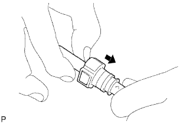 |
После подсоединения разъема к топливопроводу проверьте надежность соединения, потянув их в разные стороны.
| Потяните |
Разъем топливного шланга с крышкой:
Присоедините стопорные зажимы к разъему, с усилием нажав на крышку.
Убедитесь в отсутствии утечек топлива.
При отсоединении разъема топливопровода (быстрый разъем B) принимайте следующие меры предосторожности:
Перед отсоединением проверьте, нет ли грязи и посторонних частиц на трубопроводе и вокруг разъема. При необходимости очистите.
Отсоединяйте детали рукой.
| 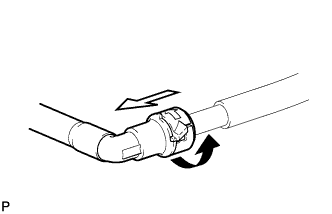 |
Если разъем и топливопровод не разъединяются, подтяните трубопровод вперед и назад, чтобы отсоединить топливопровод и вытянуть его.
| Поверните |
| Потяните |
| 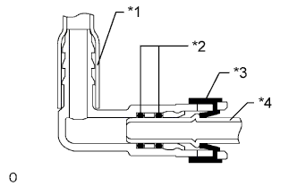 |
| *1 | Нейлоновая трубка |
| *2 | Кольцевое уплотнение |
| *3 | Фиксатор |
| *4 | Патрубок |
Проверьте, нет ли посторонних частиц и загрязнений на поверхности уплотнения отсоединенного трубопровода. При необходимости очистите.
Закройте отсоединенные топливопровод и разъем полиэтиленовым пакетом, чтобы избежать их повреждения и загрязнения.
При подсоединении разъема топливопровода (быстрый разъем B) принимайте следующие меры предосторожности:
 |
Совместите оси соединителя и топливопровода и вставьте последний в соединитель до щелчка. Если соединение тугое, слегка смажьте конец топливопровода чистым моторным маслом.
| Нажмите |
 |
После подсоединения разъема к топливопроводу проверьте надежность соединения, потянув их в разные стороны.
| Потяните |
Убедитесь в отсутствии утечек.
При отсоединении разъема топливопровода (быстрый разъем С) принимайте следующие меры предосторожности.
Убедитесь в отсутствии повреждений в части топливопровода, контактирующей с разъемом, а также в отсутствии посторонних частиц.
| 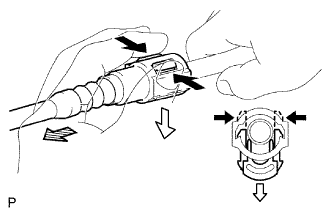 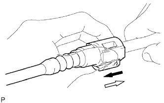 |
Освободите 2 захвата фиксатора разъема. Нажмите на разъем и отсоедините его от топливопровода.
| *1 | Фиксатор |
| Нажмите |
| Нижнее положение |
 | Потяните |
| Потяните |
| Нажмите |
| 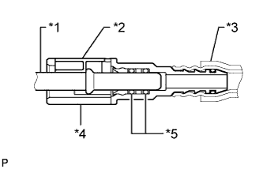 |
| *1 | Патрубок |
| *2 | Фиксатор |
| *3 | Нейлоновая трубка |
| *4 | Разъем |
| *5 | Кольцевое уплотнение |
Проверьте, нет ли посторонних частиц на поверхности уплотнения отсоединенного топливопровода. При необходимости очистите его.
Закройте отсоединенные топливопровод и разъем полиэтиленовым пакетом, чтобы избежать их повреждения и загрязнения.
При подсоединении разъема топливопровода (быстрый разъем C) принимайте следующие меры предосторожности.
Перед присоединением проверьте, нет ли посторонних частиц в трубопроводе и вокруг разъема. При необходимости очистите его.
| 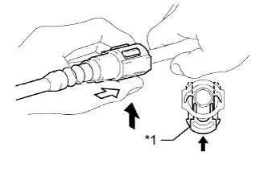 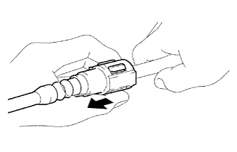 |
Совместите оси разъема и топливопровода. Вставьте трубопровод в разъем, а затем отожмите вверх фиксатор.
| *1 | Фиксатор |
| Верхнее положение |
| Нажмите |
| Потяните |
При работе с нейлоновыми трубками соблюдайте следующие меры предосторожности.
При отсоединении разъема трубки сапуна топливного бака принимайте следующие меры предосторожности:
| 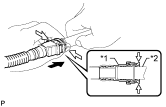 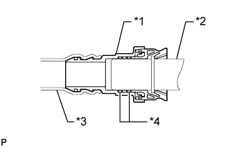 |
Зажмите фиксатор и вытяните разъем трубки сапуна топливного бака, нажимая на разъем в направлении трубопровода, чтобы отсоединить трубку сапуна топливного бака от трубопровода.
| *1 | Разъем трубки сапуна топливного бака |
| *2 | Патрубок |
| Нажмите |
| Зажмите |
| *1 | Разъем трубки сапуна топливного бака |
| *2 | Патрубок |
| *3 | Нейлоновая трубка |
| *4 | Кольцевое уплотнение |
При подсоединении разъема трубки сапуна топливного бака принимайте следующие меры предосторожности:
 |
Чтобы соединить трубку сапуна топливного бака с трубопроводом, совместите разъем трубки сапуна топливного бака с трубопроводом и нажмите на разъем трубки сапуна топливного бака до щелчка, издаваемого фиксатором.
| Нажмите |
 |
После подсоединения разъема к топливопроводу проверьте надежность соединения, потянув их в разные стороны.
| Потяните |
Проверьте, нет ли утечек топлива.
| 4.ПРОВЕРЬТЕ, НЕТ ЛИ УТЕЧЕК ТОПЛИВА |
Проверьте, нет ли утечек топлива (Нажмите здесь).